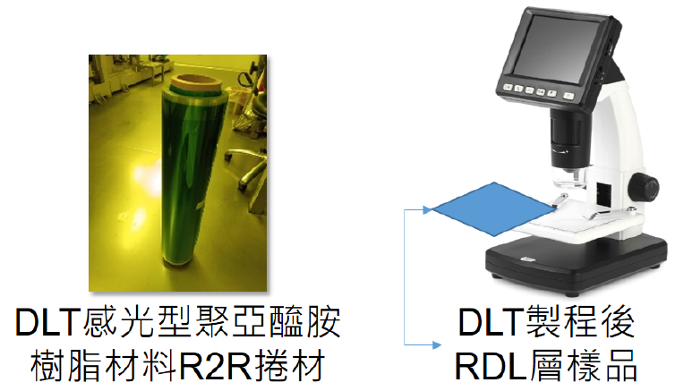

| DLT 感光型聚亞醯胺樹脂材料 RDL 技術 Digital Lithography(DLT) Photosensitive polyimide for Redistribution Layer (RDL) Technology |
| 傳統製程需反覆確認 Design Rule，會大量使用光罩耗時 費工，目前利用聚亞醯胺樹脂優異的耐化性與耐熱性，導 入元件重組層(Redistribution Layer, RDL)製程技術中， 可應用於包括半導體、面板、mini/micro LED 或是軟 板、PCB，此感光聚亞醯胺樹脂以 polyimide 為骨架導 入交聯劑與起始劑，有別於市面上主流的 polyamic acid 結構，故經過適當 UV 曝光與顯影後，可具有低溫成型之功效。 Utilizing the excellent chemical resistance and heat resistance of polyimide, it is use for the Redistribution Layer (RDL) process technology, which can be applied to semiconductor, Display, mini/micro LED, flexible substrate, and PCB. Photosensitive polyimide uses polyimide as the skeleton to adding cross-linking agent and initiator, which is different from the mainstream polyamic acid structure in the market. Therefore, after proper UV exposure and development, it can have the effect of low temperature molding.  |
| 技術洽詢聯絡人：蘇俊瑋 聯絡電話：03-591-4151 手機:0939-604696 E-mail：chunweisu@itri.org.tw |